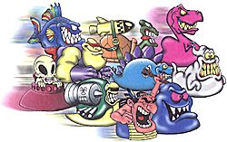

|
|
| LAOR TOYS
LTD. was founded in Israel in 1995 by Michal and Ilan Laor. The LAOR'S
business and entrepreneurial experience began over 15 years ago when in
1986 they established their first business, which would become the first
of several. In Texas, USA they set up an ice cream vendor business and
then a traveling taco stand. In Melbourne, Australia, they were pioneers
in the food delivery service. Also during their stay in Australia they
established a clothing business, a floral foam business and a toy company.
Upon their return to Israel, the Laors developed and marketed new and exciting ideas for leading companies in Israel, before founding LAOR TOYS LTD. in 1995, which today is solely an export company. LAOR TOYS has traditionally dedicated itself to invention, design, development and manufacture of unique concepts and novelty items, primarily for children. LAOR specializes in products, projects and concepts that have potential for unlimited volume and marketing potential. LAOR TOYS has generally always been responsible for the actual creation, design and manufacture of the product itself. LAOR TOYS maintains a factory with plastic injection and foil packaging machines, which are owned fully by LAOR. The company employs the factory on a price per unit basis, which has consistently allowed prices to remain stable and low, enabling sales in great volume to the customer abroad. LAOR also employs graphic artists and a professional office staff.  One of LAOR TOYS' most distinct advantages in the toy industry today is the extensive and solid relationships that have been established with the leading toy companies and top distributors in the field, all over the world. LAOR TOYS has proven to be not only an ingenious and creative inventor and developer, but a reliable and excellent business partner. These ties with the leading distributors worldwide are key factors, which will advocate the success of any new product. In 1995 Michal and Ilan LAOR created their first "hit" product, the JOJO'STM - a family of 36 collectable plastic figurines made in a variety of dazzling colors - which sold in quantities by the millions and which would eventually pave the way for LAOR TOYS as leading company in its field. To date, LAOR TOYS LTD. has manufactured and sold over 170 million JOJO'STM. To contact: 28 Tarshish street, Building 28 Northern Industrial Park, POB 3078 Caesarea Tel: 972-4-6327750, 972-4-6327749, Fax: 972-4-6327640 Contact: Ms. Michal Laor, Marketing Director ns_laortoy@bezeqint.net www.laortoys.co.il |